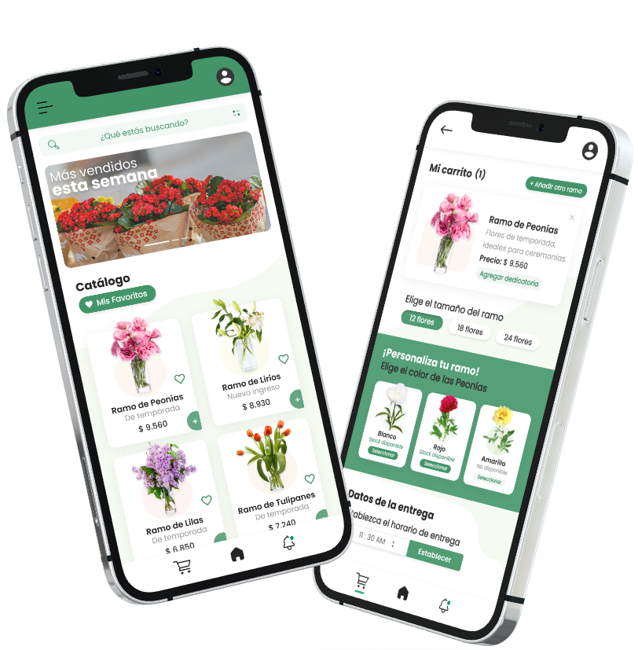
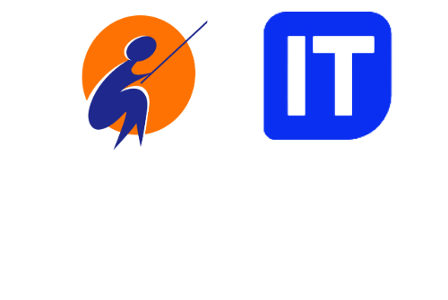
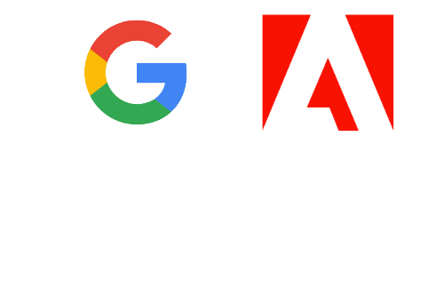
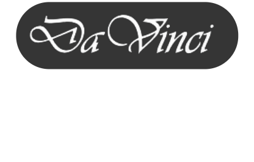

Soy Yamila Ramos, estudiante de Ingeniería en Sistemas en UTN FRBA con formación en Desarrollo Front-End y Diseño UX/UI. Diseño interfaces centradas en el usuario, combinando prototipado con implementación técnica para crear soluciones auténticas. Te muestro cómo transformé lo que aprendí en proyectos funcionales.
Actualmente con disponibilidad Full-time

Desarrollo web ● Diseño de interfaz ● Experiencia de usuario ● E-commerce ● Diseño gráfico ● Desarrollo web ● Diseño de interfaz ● Experiencia de usuario ● E-commerce ● Diseño gráfico ● Desarrollo web ● Diseño de interfaz ● Experiencia de usuario ● E-commerce ● Diseño gráfico ● Desarrollo web ● Diseño de interfaz ● Experiencia de usuario ● E-commerce ● Diseño gráfico ●
Mi propósito en tecnología.
Hace tres años, en la búsqueda de mi vocación, descubrí que podía fusionar mi interés por la tecnología con el diseño para dar vida a mis ideas. A partir de ese momento, comencé a explorar activamente diversas áreas como la programación, el diseño UX/UI y la inteligencia artificial.
Hoy comprendo la importancia de una formación complementaria sólida y de un proceso de aprendizaje constante para conseguir mi primera oportunidad profesional en el sector IT.

2022-2023
Obtuve una beca para una capacitación laboral en Desarrollo Web Full-Stack a cargo de Educación IT, con mentorías de profesionales de diversas áreas de JP Morgan, Makro y L'oreal. Esto marcó mi primer acercamiento al área de tecnología.

2024-2025
Realicé diversas certificaciones online, entre ellas Diseño Gráfico de Adobe, Diseño UX/UI de Google y Marketing Digital, lo que me permitió desarrollar y recopilar los proyectos que forman parte de este portafolio, el cual continúa en desarrollo.

2026
Actualmente me encuentro aprendiendo WordPress, para agilizar mis tiempos de trabajo y ampliar conocimientos técnicos.
A futuro, me gustaría dominar tecnologías como React y Java para continuar mi desarrollo profesional.
2022-2023
Obtuve una beca para una capacitación laboral en Desarrollo Web Full-Stack a cargo de Educación IT, con mentorías de profesionales de diversas áreas de JP Morgan, Makro y L'oreal. Esto marcó mi primer acercamiento al área de tecnología.
2024-2025
Realicé diversas certificaciones online, entre ellas Diseño Gráfico de Adobe, Diseño UX/UI de Google y Marketing Digital, lo que me permitió desarrollar y recopilar los proyectos que forman parte de este portafolio, el cual continúa en desarrollo.
2026
Actualmente me encuentro aprendiendo WordPress, para agilizar mis tiempos de trabajo y ampliar conocimientos técnicos. A futuro, me gustaría dominar tecnologías como React y Java para continuar mi desarrollo profesional.
¿Cómo es mi proceso creativo?
01.
Observar y entender qué puede mejorar
Encuentro inspiración en profesionales con mayor experiencia. Identifico qué recursos podría incorporar para desarrollar un proyecto propio.
02.
Investigar, probar y dejar que las ideas evolucionen
Busco entender qué funciona, qué no y por qué. Disfruto explorar alternativas hasta encontrar una dirección que represente al proyecto.
03.
Convierto la inspiración en una propuesta concreta
Llevo la inspiración a la práctica, experimentando con distintas herramientas de diseño y tecnologías hasta materializar mis ideas.
04.
Publicar, recibir feedback y seguir aprendiendo
Analizo qué podría funcionar mejor, qué corregir o simplificar para encontrar un equilibrio entre lo que imaginé y el resultado final.
Desarrollo web ● Diseño de interfaz ● Experiencia de usuario ● E-commerce ● Diseño gráfico ● Desarrollo web ● Diseño de interfaz ● Experiencia de usuario ● E-commerce ● Diseño gráfico ● Desarrollo web ● Diseño de interfaz ● Experiencia de usuario ● E-commerce ● Diseño gráfico ● Desarrollo web ● Diseño de interfaz ● Experiencia de usuario ● E-commerce ● Diseño gráfico ●
Light Studio – Branding de una Agencia de Marketing

Diciembre, 2025
Diseño Gráfico
Identidad visual y material promocional para una agencia creativa ficticia con un cliente real.
Trabajé en el diseño de un conjunto de piezas gráficas para redes sociales (carruseles, videos e historias), credenciales, folletos y tarjeta de presentación en busca de construir una estética coherente y con personalidad.
Tecnologías utilizadas:


Materia – E commerce para una Artística
Noviembre, 2025
Desarrollo Web
Tienda online funcional desarrollada para la certificación en Desarrollo Web de Escuela Da Vinci que ofrece una experiencia de compra alineada a la identidad de marca.
Implementé el sitio en un entorno local utilizando XAMPP, MySQL y WordPress, realizando la estructuración de productos, categorías y talleres, junto con la personalización visual del sitio.
Tecnologías utilizadas:


Soplo de vida – Sitio Web de Adopción de Mascotas
Enero, 2024
Diseño UX/UI
Prototipo de sitio web responsivo para un refugio de animales local, diseñado para ofrecer una experiencia optimizada en web y dispositivos móviles.
Desarrollé un sistema de componentes reutilizables en Figma para garantizar escalabilidad, consistencia visual y eficiencia en una futura implementación.
Tecnologías utilizadas:

ADA – Plataforma Web sobre Violencia de Género
Diciembre, 2023
Desarrollo Web
Proyecto integrador desarrollado en equipo durante una capacitación laboral en Desarrollo Web Full-Stack con el objetivo de concientizar sobre una problemática social real.
Su nombre rinde homenaje a Ada Lovelace, la primera mujer programadora. Me desempeñé en
el rol de desarrolladora Front-End, a cargo de la maquetación y el diseño de interfaces.
Tecnologías utilizadas:


Hydrangea – Aplicación de Catálogo de Flores
Octubre, 2023
Diseño UX/UI
Prototipo de alta fidelidad realizado para la Certificación en Diseño UX/UI de Google. Todas las decisiones de diseño e iteraciones se documentaron en un Case Study 
Desde la etapa de ideación, la creación de wireframes en papel y digital, los prototipos de baja fidelidad hasta las pruebas de usabilidad.
Tecnologías utilizadas: